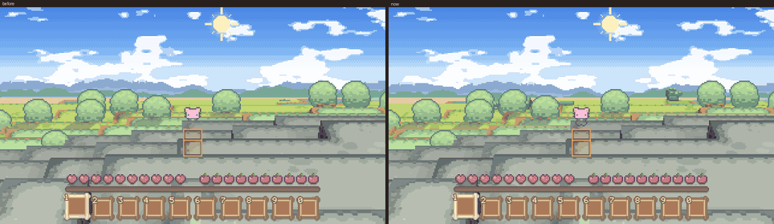
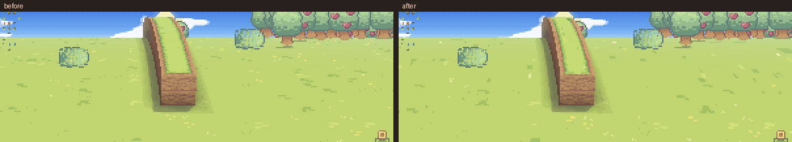
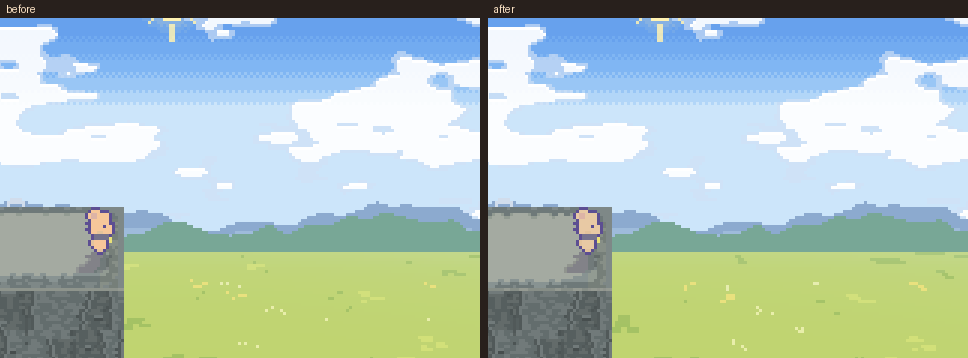

2026-11-26
Fixes: hills stay solid, the horizon holds still
Small things, all of them in the game now: play it.
Hills stay solid
Walking up a stone hillside, the land under you could open up like a cave and show its grey insides. Now it stays shut.

Left before, right now: climbing a stone hill
The far land holds still
The world bends away toward the horizon. The bends used to slide along the far ridges as you walked; now they stay put on the land.

Left before, right now: walking north, watch the far ridge
Into the water
Jump off a ledge into a pond and you go into the water, without popping up the screen for a moment first.

Left before, right now, slowed down 4x
Also fixed
- Climbing: you stop on the stair you let go on, and stepping onto a ladder from a cliff top no longer throws you past its foot.
- Speech bubbles stay sharp at 125% and 175% display scale.
- A far plateau's rim has no more dark specks.
- Fires, puffs and dropped items are lighter on slower computers.
- Nyxwing's entrance and its music meet you where the fight is, even if you come late.